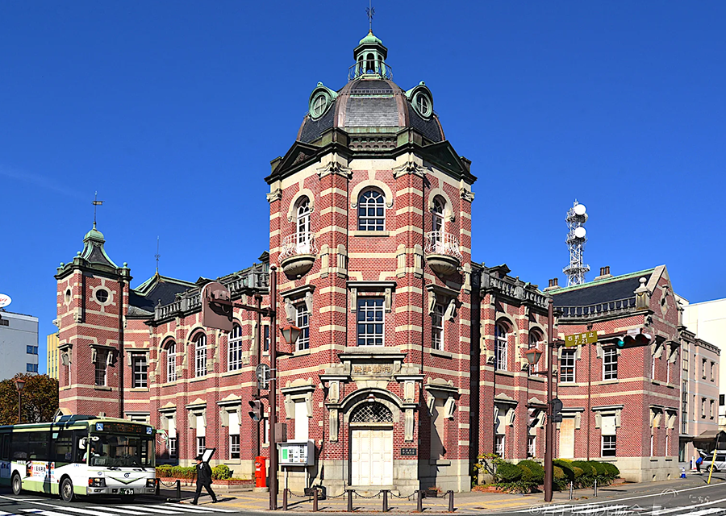

岩手赤レンガ館
岩手銀行赤レンガ館は、1911（明治44）年に盛岡銀行の本店行舎として落成し、1936（昭和11）年に岩手殖産銀行（のちに行名を岩手銀行に変更）がこの建物を譲り受け、本店として利用しはじめました。その後、1983（昭和58）年に岩手銀行新社屋完成に伴い中ノ橋支店となりました。
設計は東京駅でも知られる、辰野・葛西建築設計事務所によるもので、辰野金吾が設計した建築としては東北地方に唯一残る作品です。
1994年12月27日、「岩手銀行（旧盛岡銀行）旧本店本館」の名称で、現役の銀行建築として初めて国の重要文化財に指定されました。
レトロな建物雰囲気を楽しむことができます。